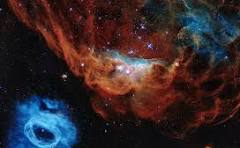

El espacio exterior, vasto e insondable, es el escenario en el que se desenvuelven los fenómenos más extraordinarios y misteriosos de nuestro universo. Desde la Tierra, miramos hacia el cielo nocturno y contemplamos un lienzo salpicado de estrellas, cada una representando soles lejanos, muchos de ellos acompañados por sus propios sistemas planetarios.
Entre las maravillas del espacio exterior se encuentran las galaxias, vastas agrupaciones de estrellas, gas y polvo cósmico que forman estructuras impresionantes. Nebulosas coloridas y resplandecientes, como guarderías estelares, dan origen a nuevas estrellas y planetas. En la inmensidad cósmica, agujeros negros y agujeros de gusano desafían nuestra comprensión del tiempo y el espacio.
Nuestro sistema solar, un pequeño rincón en la vastedad galáctica, alberga planetas con características únicas, desde la ardiente superficie de Venus hasta las gélidas lunas de Júpiter y Saturno. La Luna, nuestro satélite natural, ha sido testigo de la historia terrestre y sigue influyendo en las mareas y ciclos naturales.